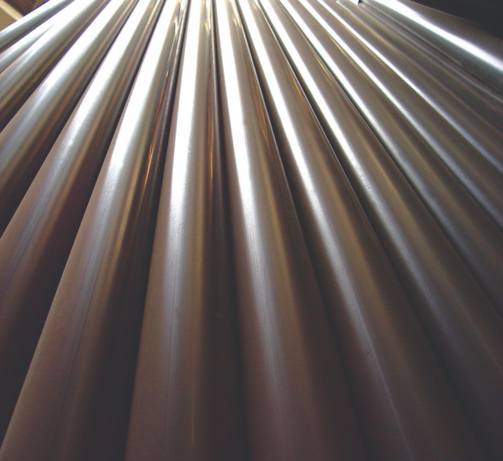

About Dadex
A journey of trust from a vision to the industry leader. Since 1959, Dadex has evolved from a Pakistani manufacturing pioneer into a diversified construction-products company.
Over six decades of
engineering experience.
Dadex Eternit Limited was incorporated as a public limited company in 1959 and is listed on the Pakistan Stock Exchange. The company manufactures and sells construction materials, principally piping systems and allied products.
A pioneer of thermoplastic piping systems in Pakistan, Dadex has expanded from its early fibre cement roots into a broad portfolio serving construction, housing, architecture, telecommunications and infrastructure applications.

How we deliver it.
- ✓ Provide unparalleled service and best value through a responsive and cost-effective supply chain.
- ✓ Increase penetration in piping systems through new channels and market opportunities.
- ✓ Provide quality products through international standards and best practices.
From roofing heritage to
modern piping systems.
1959
Dadex established
Incorporated as a public limited company and listed on the Karachi Stock Exchange.
Early years
Manufacturing roots
Dadex began with fibre cement roofing and pipe manufacturing, establishing its industrial foundation.
Expansion
Thermoplastic systems
The portfolio expanded into modern thermoplastic piping and drainage technologies for diverse applications.
Today
Integrated solutions
Dadex serves water, sewerage, drainage, cable and utility ducting, roofing and specialised applications.